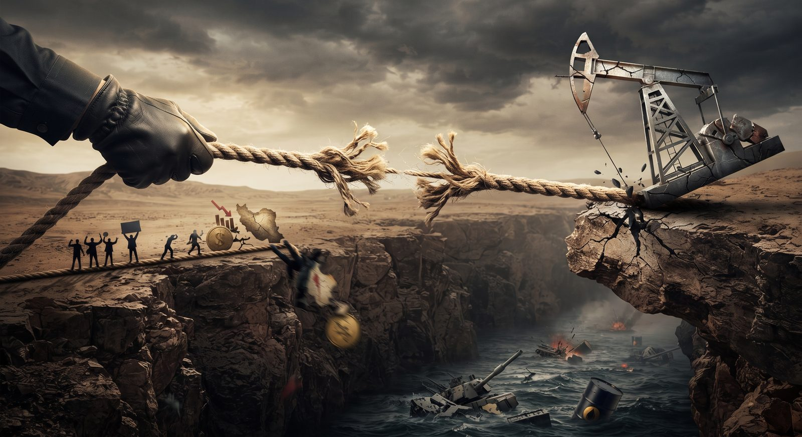

Irán está probablemente excedido en los riesgos que ha decidido correr al prolongar esta guerra. Es verdad que Estados Unidos e Israel han quedado lejos de cumplir con sus objetivos estratégicos. También es verdad que, cuando en junio se pactó un cese al fuego, los términos de ese acuerdo fueron vistos como favorables para Irán y que, por tanto, en todo el planeta han estado fluyendo toneladas de análisis acerca de por qué esta ha sido una derrota estratégica de Washington. Pero ese cese al fuego no se sostuvo y fue la línea más dura del poder en Irán la que lo hizo colapsar, buscando incluso mejores términos que los acordados. Desde entonces han pasado ya más de tres meses en los que no se ha retornado a las hostilidades mayores, pero tampoco hay un estado de paz. La cuestión es que, en este lapso, ahora es la estrategia iraní la que está exhibiendo importantes grietas. Acá, unas notas al respecto:
Lo que ha logrado Irán
1. Trump buscaba una victoria veloz y, desde su intuición, esto era completamente viable una vez que se asesinara al líder supremo, el ayatolá Alí Khamenei, y a su círculo más cercano. Bajo esta lógica, era posible conseguir, si no un cambio total del régimen, sí un régimen mucho más colaborativo con EE. UU., bajo términos impuestos desde Washington, muy al estilo de lo que ha pasado en Venezuela.
2. Así que el primer logro del régimen iraní ha sido su supervivencia. Pero, adicionalmente, a través de sus tácticas y mediante la prolongación de los enfrentamientos, Teherán consiguió elevar los costos para Israel y, especialmente, para Trump, por haber iniciado la guerra.
3. Irán desplegó capacidades asimétricas que Washington fue incapaz de prever, contener o impedir. Esto consistió, primero, en ejercer eficazmente una triangulación coercitiva; es decir, responder con ataques en contra de terceros (más de una decena de países de la región), dañando especialmente la infraestructura energética, pero también la civil. Esto se sumó al cierre del estrecho de Ormuz, por donde, antes de la guerra, circulaba una quinta parte del petróleo y el gas que se consume en el mundo. Asimismo, Irán pudo penetrar los escudos defensivos estadounidenses y ocasionó considerables bajas y daños en varias de las bases militares que la superpotencia mantiene en la región.
4. Además de lo anterior, Irán consiguió involucrar a sus milicias aliadas en su defensa. Inicialmente, Hezbollah fue la mayor protagonista desde Líbano, pero la estrategia consiguió sumar a las milicias proiraníes que operan en Irak y, posteriormente, a los hutíes, quienes actualmente no solo amenazan las rutas alternas para la salida del petróleo saudí, sino incluso el comercio global.
5. El resultado de todo ello consistió en una combinación de efectos financieros, económicos, simbólicos, psicológicos y, sobre todo, políticos. A medida que transcurría el tiempo, EE. UU. exhibió enormes vulnerabilidades, entre ellas el agotamiento de su arsenal, la sobreconcentración de sus fuerzas en una zona específica, descuidando otras regiones prioritarias, pero, sobre todo, su falta de planeación estratégica. A esto se sumó la intolerancia de su sociedad y su dirigencia ante un conflicto prolongado que requería, militarmente, mayores niveles de escalada o incluso una intervención terrestre. Estos factores colocaron a Trump ante la necesidad de pactar un acuerdo que resultara el menor de los males para su país.
Lo que Irán ya tenía en sus manos
1. Así, en junio, Irán tenía ya en la mesa un cese al fuego considerado altamente favorable para sus intereses. Había logrado el levantamiento inmediato del bloqueo naval impuesto por EE. UU.; garantías de que no se impondrían nuevas sanciones ni se desplegarían fuerzas adicionales mientras duraran las negociaciones; exenciones para que pudiera volver a exportar petróleo y sus derivados; acceso a al menos unos 24.000 millones de dólares en fondos y activos congelados; y el compromiso estadounidense de trabajar con socios regionales en un plan de al menos 300.000 millones de dólares para su reconstrucción. Todo ello, sin que Teherán tuviese que comprometerse a dejar de enriquecer uranio o a sacar del país el material ya enriquecido con el que cuenta. De hecho, el tema nuclear quedaba postergado para futuras negociaciones.
2. Y, sin embargo, los grupos de línea dura que actualmente controlan el país, desde las Guardias Revolucionarias Islámicas hasta el Supremo Consejo de Seguridad, optaron por dejar ir esos logros y mantener la presión militar.
3. La lógica que mueve esta decisión tiene que ver, sobre todo, con la desconfianza de esos grupos en Trump y en Israel. Desde su perspectiva, las negociaciones y los acuerdos con Washington han sido quebrantados múltiples veces y, por tanto, están convencidos de que Trump y Netanyahu solo estaban ganando tiempo para volver a atacar. Por tanto, la única forma de garantizar realmente la supervivencia del régimen sería mantener una situación de inestabilidad, imponer condiciones para la navegación del estrecho de Ormuz, y seguir demostrando fuerza y determinación a pagar los costos de sostener los enfrentamientos.
Los crecientes riesgos que Teherán está corriendo
1. Dicho todo lo anterior, tenemos que considerar cómo inició todo este último capítulo de la historia iraní: una ola de manifestaciones masivas a fines de 2025 e inicios del 26, las mayores que hayamos visto en la República Islámica desde su fundación. Fue entonces cuando Trump, tras haber capturado a Maduro, amenazó al régimen iraní y ofreció ayuda a esos manifestantes. Pero en el fondo, los factores que detonaron esas protestas siguen todos ahí. En ese momento se había combinado una crisis monetaria y económica, con una crisis de agua, una crisis de energía y una enorme crisis de legitimidad, la cual ha activado movimientos de protesta desde hace décadas, pero que ahora llegaba a un punto que parecía culminante y que requirió del asesinato de miles de manifestantes por parte del régimen para poder contener lo que estallaba.
2. Como es natural, la situación económica de Irán no ha hecho más que empeorar con la guerra, con el bloqueo y las sanciones estadounidenses. La moneda iraní se desplomó a un nuevo récord apenas el martes pasado, después de llevar varios meses alcanzando bajas históricas. Todo en Irán está subiendo y la población padece escasez, desde gasolina hasta medicamentos e incluso alimentos. Se calcula que la economía iraní ha perdido más de un millón de empleos.
3. Pero, además de ello, la mayor de todas las armas que ha esgrimido el régimen iraní —el cierre de Ormuz— se encuentra altamente vulnerada. No solo las economías del planeta han encontrado relativa resiliencia mediante la utilización de reservas energéticas y el acceso a petróleo por parte de proveedores fuera de la región, sino que los exportadores afectados por el cierre del estrecho han mostrado, por un lado, mayor tolerancia al riesgo de transitar esa ruta y, por el otro, han encontrado vías alternativas para exportar su crudo y su gas. Solo como ejemplo, se calcula que actualmente ya está volviendo a circular por Ormuz entre 50 y 60 % del petróleo que circulaba antes de la guerra.
4. Aun así, es verdad que los precios del petróleo se mantienen altos, principalmente por la expectativa de que las hostilidades en la región podrían reanudarse. Esta expectativa tiene bases. Justamente debido al momento de vulnerabilidad que están mostrando las tácticas de Irán, la línea más dura de las Guardias Revolucionarias podría nuevamente optar por escalar y seguir haciendo pagar altos costos a EE. UU. y sus aliados mediante nuevos daños a la infraestructura energética de la región, entre otras posibilidades.
5. Pero, dicho eso, las fracturas políticas dentro del propio régimen en Irán son cada vez más patentes. Esencialmente, entre quienes buscan poner ya un fin a la situación actual y mirar hacia adelante, y quienes se mantienen en la posición de que Irán puede y debe seguir mostrando fuerza. Todo ello sin mencionar que, con cada día que pasa, la población iraní está teniendo que aguantar condiciones de incluso mayor deterioro que las que la llevaron a las calles hace pocos meses.
Como conclusión, las mayores presiones contra el régimen iraní no son necesariamente las que proceden de Washington o Tel Aviv, sino las presiones que se siguen acumulando internamente, como bomba de tiempo. El régimen cuenta con un vasto arsenal de herramientas para sofocarlas, lo sabemos, pero quienes están tomando las decisiones podrían estar calculando mal su capacidad de tolerancia frente al creciente deterioro.
CIPMEX · Centro de Investigación para la Paz México, A.C. · Paz que se piensa, paz que se construye